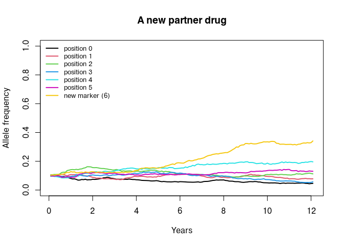

vignettes/NewDrugs.Rmd
NewDrugs.Rmdmagenta ships with AL, ASAQ and DHA-PPQ. Sooner or later
you will want something else: a new partner drug, a triple combination,
or a drug that works in a way the existing ones do not.
This vignette works through both cases. The first half shows how to
define a drug that fits the existing framework, which is mostly a matter
of supplying the right numbers to drug_create(). The second
half takes a drug that does not fit, single low-dose
primaquine (SLD-PQ), and uses it to map out exactly where the model
would have to be extended. That second half is intended as the starting
point for a project on modelling SLD-PQ, and it is deliberately explicit
about what the model cannot currently do.
Read the resistance vignette first; this one assumes you know what the barcode positions and the efficacy vector are.
Everything magenta knows about a drug is in the list
returned by drug_create(). To add a new one you need four
things:
Suppose we have a new partner drug whose resistance is conferred by a
single new marker, which we will put at barcode position 6, and which is
also compromised by artemisinin resistance at position 4. That is two
resistance positions, so the efficacy vector has 2^2 = 4
entries, ordered with position 4 as the least significant bit:
new_drug <- magenta:::drug_create(
prob_of_lpf = c(0.98, # wild type at both
0.93, # kelch13 580Y only
0.80, # new partner drug marker only
0.55), # both
barcode_res_pos = c(4, 6),
prophylactic_pos = 6,
dur_P = 30,
dur_SPC = 7,
prophylactic_probability =
1 - pgamma(seq(0, 60, 0.2), shape = 20, rate = 20 / 28),
prophylactic_resistant_probability =
1 - pgamma(seq(0, 60, 0.2), shape = 20, rate = 20 / 12)
)
str(new_drug)
## List of 9
## $ lpf : num [1:4] 0.98 0.93 0.8 0.55
## $ barcode_positions : num [1:2] 4 6
## $ prophylactic_positions: num 6
## $ dur_P : num 30
## $ dur_SPC : num 7
## $ hill_n : num 5.71
## $ hill_kA : num 0.263
## $ hill_res_n : num 13.3
## $ hill_res_kA : num 0.564The two protection curves say that the drug protects for about 28
days against a sensitive parasite and about 12 days against one carrying
the new marker. drug_create() fits the Hill parameters to
those curves for you.
The barcode now has to be long enough to contain position 6, so
num_loci goes up to 7 and the fitness cost table with
it:
dl_new <- drug_list_create(
resistance_flag = TRUE,
number_of_resistance_loci = 7,
artemisinin_loci = 4,
cost_of_resistance = rep(1, 7),
drugs = list(new_drug),
number_of_drugs = 1,
partner_drug_ratios = 1
)
dl_new$resistance_loci
## [1] 4 6
out_new <- pipeline(
EIR = 10, N = 2000, years = 12, ft = 0.4,
num_loci = 7, plaf = rep(0.1, 7),
update_length = 30, update_save = TRUE,
human_update_save = TRUE, summary_saves_only = TRUE,
genetics_df_without_summarising = TRUE,
drug_list = dl_new, seed = 1L
)
## Seed set to 1
## magenta v1.3.8
## Starting Stochastic Simulation for 12 years
pos <- seq_len(length(out_new) - 1)
af <- do.call(rbind, lapply(out_new[pos], "[[", "af"))
colnames(af) <- c(paste("position", 0:5), "new marker (6)")
years <- seq_len(nrow(af)) / 12
matplot(years, af, type = "l", lty = 1, lwd = 2, col = seq_len(ncol(af)),
ylim = c(0, 1), xlab = "Years", ylab = "Allele frequency",
main = "A new partner drug")
legend("topleft", legend = colnames(af), col = seq_len(ncol(af)),
lty = 1, lwd = 2, bty = "n", cex = 0.8)
The new marker is strongly selected and kelch13 rises more slowly, which is what the efficacy table asks for. Defining a drug is really this easy, provided the drug acts by curing infections.
SLD-PQ is a single 0.25 mg/kg dose of primaquine given alongside an ACT. It is not there to cure the patient; the ACT does that. It is there to stop the patient infecting mosquitoes.
The World Health Organization recommended it in 2012, set out in the 2015 policy brief Single-dose primaquine as a gametocytocide in Plasmodium falciparum malaria (WHO/HTM/GMP/2015.1), for low-transmission settings and for areas threatened by artemisinin resistance, with no requirement for G6PD testing at that dose. Pregnant women are excluded; the infant age cut-off has been revised since the 2015 brief, so check the current guideline before choosing an age restriction to model.
The mechanism matters for how you would represent it:
That last point is the crucial one. A model that represents SLD-PQ by accelerating gametocyte clearance will get the timing badly wrong.
| Quantity | Value | Source |
|---|---|---|
| Reduction in mosquito infectivity, day 2 | 92.6% (95% CI 78.3-100) at 0.25 mg/kg | Dicko et al. 2016, Lancet Infect Dis |
| Reduction in mosquito infection rate, 48 h | 100% median with PQ vs 50.4% for DHA-PPQ alone | Stone et al. 2022, Lancet Microbe |
| Infectious feeds from day 5 onwards | 2 of 283 feeds infectious | Stepniewska et al. 2022, J Infect Dis |
| Mean time to gametocyte clearance | 7.7 days with PQ vs 19.7 days without | Goncalves et al. 2016, BMC Medicine |
| Gametocyte positivity, day 7 (odds ratio) | aOR 0.34 (0.22-0.52) | Yilma et al. 2025, Lancet Infect Dis |
| Residual infectivity after ACT alone | Partner drug dependent; large after DHA-PPQ, small after AL | Stepniewska et al. 2022, J Infect Dis |
References: Dicko et al. (2016) doi:10.1016/S1473-3099(15)00479-X; Goncalves et al. (2016) doi:10.1186/s12916-016-0581-y; Stone et al. (2022) doi:10.1016/S2666-5247(21)00192-0; Stepniewska et al. (2022) doi:10.1093/infdis/jiaa498; Yilma et al. (2025) doi:10.1016/S1473-3099(25)00078-7; Bradley et al. (2018) doi:10.7554/eLife.34463 for the relationship between gametocyte density and mosquito infection.
Two caveats are worth carrying into any analysis. First, no randomised trial has demonstrated a community-level transmission effect; the evidence is all individual-level infectivity. Second, the marginal benefit depends strongly on the partner drug, because after artemether-lumefantrine post-treatment infectivity is already close to zero, whereas after DHA-PPQ it is not.
Look again at what a drug is in magenta:
names(magenta:::drug_create_al())
## [1] "lpf" "barcode_positions" "prophylactic_positions"
## [4] "dur_P" "dur_SPC" "hill_n"
## [7] "hill_kA" "hill_res_n" "hill_res_kA"Every one of these fields feeds into one of two things: the
probability that treatment clears the infection (lpf,
barcode_positions), or the probability that a new infection
is blocked afterwards (prophylactic_positions,
dur_P, the hill_* parameters).
dur_SPC extends how long someone stays in the treated
state.
There is no field that changes how infectious a treated person is to mosquitoes. SLD-PQ does not change cure rates and does not extend prophylaxis, so setting any combination of these values cannot represent it.
Following the code is the quickest way to see where a blocking term
would go. On each day, for every bite,
Simulation_Update_cpp asks whether the human infects the
mosquito, and only then processes the gametocytes:
// src/main_update.cpp
if (population[...].reciprocal_infection_boolean(parameters))
{
scourge[...].handle_bite(parameters, population[...]);
}Person::reciprocal_infection_boolean() decides
whether this person infects this mosquito. It draws on
the infection state (cD, cA, cU,
cT) and, if absolute_fitness_cost_flag is on,
scales that by the fitness of the best strain for asymptomatic and
subpatent hosts only.Mosquito::handle_bite() then decides which
strains get through, and how many oocysts form.A transmission-blocking drug has to act in the first of these. Anything added to the second can change the genetic composition of what is transmitted, but not whether transmission happens.
magenta has two parameters that look like they might
serve, both held in vector_adaptation_list_create() and
both gated on gametocyte_sterilisation_flag:
str(magenta:::vector_adaptation_list_create(
vector_adaptation_loci = 4,
gametocyte_sterilisation_flag = TRUE,
gametocyte_sterilisation = 0.5,
oocyst_reduction_by_artemisinin = 0.2
)[c("gametocyte_sterilisation_flag", "gametocyte_sterilisation",
"oocyst_reduction_by_artemisinin")])
## List of 3
## $ gametocyte_sterilisation_flag : logi TRUE
## $ gametocyte_sterilisation : num 0.5
## $ oocyst_reduction_by_artemisinin: num 0.2gametocyte_sterilisation multiplies
the weight of an artemisinin sensitive strain in the pool from
which gametocytes are drawn, for hosts who are treated or who recently
failed treatment. It changes which strain is
transmitted, not whether one is, so it shifts the genetic composition of
onward transmission towards resistance without reducing its amount.oocyst_reduction_by_artemisinin
multiplies the number of oocysts formed when a mosquito bites a recently
treated host. Because the result is passed through
ceiling(), at least one oocyst always forms. It reduces the
genetic diversity of an infection, not its occurrence.Neither can block transmission, and a simulation shows it. Below we compare no blocking, the default blocking parameters, and an extreme setting that reduces oocysts by 99%:
dl_al <- drug_list_create(
resistance_flag = TRUE, number_of_resistance_loci = 6, artemisinin_loci = 4,
cost_of_resistance = rep(1, 6), drugs = list(magenta:::drug_create_al()),
number_of_drugs = 1, partner_drug_ratios = 1
)
run_block <- function(va, seed = 1L) {
out <- pipeline(EIR = 20, N = 3000, years = 12, ft = 0.6,
num_loci = 6, plaf = rep(0.1, 6),
update_length = 30, update_save = TRUE,
human_update_save = TRUE, summary_saves_only = TRUE,
genetics_df_without_summarising = TRUE,
drug_list = dl_al, vector_adaptation_list = va, seed = seed)
p <- seq_len(length(out) - 1)
mean(tail(unlist(lapply(out[p], "[[", "micro_2_10")), 24))
}
va <- function(...) magenta:::vector_adaptation_list_create(
vector_adaptation_loci = 4, ...)
data.frame(
scenario = c("no blocking", "default blocking", "99% oocyst reduction"),
pfpr_2_10 = c(
run_block(va()),
run_block(va(gametocyte_sterilisation_flag = TRUE,
gametocyte_sterilisation = 0.5,
oocyst_reduction_by_artemisinin = 0.2)),
run_block(va(gametocyte_sterilisation_flag = TRUE,
gametocyte_sterilisation = 0.5,
oocyst_reduction_by_artemisinin = 0.01))
)
)
## Seed set to 1
## magenta v1.3.8
## Starting Stochastic Simulation for 12 years
## Seed set to 1
## magenta v1.3.8
## Starting Stochastic Simulation for 12 years
## Seed set to 1
## magenta v1.3.8
## Starting Stochastic Simulation for 12 years
## scenario pfpr_2_10
## 1 no blocking 0.4330282
## 2 default blocking 0.4250708
## 3 99% oocyst reduction 0.4329253Even a 99% reduction in oocysts barely moves prevalence, because the mosquito still becomes infected. This is the empirical confirmation that the existing hooks are not a transmission-blocking mechanism.
While tracing this, two discrepancies came to light. Both only matter
when gametocyte_sterilisation_flag = TRUE, which is off by
default.
src/person.cpp was applied to strains resistant at
all artemisinin_loci, the opposite of what
the comment above it and the documentation of
gametocyte_sterilisation describe. Artemisinin sterilises
the gametocytes of parasites that are sensitive to it, so the
multiplier now applies to the sensitive strain. The practical
consequence is that switching sterilisation on now gives the artemisinin
resistant parasite a transmission advantage, where previously it
penalised it.src/mosquito.cpp,
oocyst_reduction_by_artemisinin is written back into the
shared pre-drawn oocyst frequency vector rather than applied to a copy,
so the reduced value persists for later mosquitoes that reuse that
element until the vector is regenerated at the start of the next year.
Since that code sits in handle_bite(), it is best fixed
alongside any work that adds a transmission blocking term.Representing SLD-PQ properly is a small, well-contained extension. The pieces are:
1. A transmission-blocking term on the drug. Add two
fields to drug_create():
drug_create(
...,
transmission_blocking = 0.05, # relative infectivity after the dose
dur_transmission_blocking = 14 # days over which it applies
)A value of 0.05 means a treated person is 5% as likely
to infect a biting mosquito as they would otherwise be. Because
sterilisation is fast, a step function over
dur_transmission_blocking days is a reasonable first
approximation; the data in the table above would support a short ramp
over the first 48 hours if that turns out to matter.
2. Carry the fields into C++. They travel the same
route as every other drug property: drug_create() to
drug_list_create(), through
param_list_simulation_init_create(), into the
Drug class in src/drug.h alongside
m_dur_P and m_dur_SPC, with matching entries
in drug_to_rcpp_list() and the list constructor so that
saved states round-trip.
3. Apply it at the point of transmission. In
Person::reciprocal_infection_boolean() in
src/person.cpp, scale the probability of infecting the
mosquito when the person was treated recently:
// sketch, not current code
if (parameters.g_current_time - m_day_last_treated <
parameters.g_drugs[m_drug_choice].get_m_dur_transmission_blocking()) {
infectivity *= parameters.g_drugs[m_drug_choice].get_m_transmission_blocking();
}m_day_last_treated and m_drug_choice are
already tracked per person, and both are already saved and restored, so
no new per-person state is needed. That is what makes this extension
cheap.
4. Decide what happens on treatment failure. The
dose is given with the ACT, so it should block transmission even when
the schizonticide fails. That means keying the effect off
m_day_last_treated rather than off the infection state,
which the sketch above does.
5. Represent coverage separately from
ft. SLD-PQ is given to a subset of treated
patients. The simplest approach is a per-drug coverage probability drawn
at treatment, so that an AL plus SLD-PQ policy becomes a second drug in
an MFT list with the same efficacy table and a blocking term, deployed
at whatever coverage is being modelled. That reuses the existing
partner_drug_ratios machinery and needs no further
code.
Two simplifications are worth stating in any write-up.
magenta does not track gametocyte density, only whether
a strain is gametocytogenic. The relationship between gametocyte density
and the probability a mosquito is infected (Bradley et al. 2018)
therefore cannot be represented, and a blocking multiplier is a summary
of it rather than a mechanistic description.With the extension above, these become tractable:
magenta tracks the whole reservoir by infection state, so
this is directly testable across a range of EIR.A sensible order of work is: implement the blocking term and check it behaves (infectivity should drop to the expected multiplier), reproduce the individual-level infectivity numbers in the table above as a calibration check, and only then run population-level scenarios.